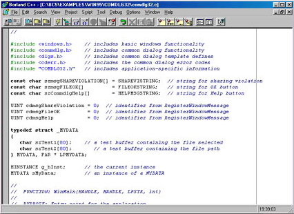

Все вы использовали компьютерные программы, такие как текстовый процессор, электронные таблицы и даже Microsoft Windows 95. Компьютерные программы, или программное обеспечение, представляют собой файлы, содержащие инструкции, которые указывают компьютеру, что следует делать. Если вы работаете в среде MS-DOS или Windows, то, например, файлы с расширениями ЕХЕ и СОМ содержат команды, которые компьютер может выполнять. Другими словами, файлы содержат специальные инструкции, выполняемые компьютером, обычно одну за другой, для решения определенной задачи. При создании программы вы указываете инструкции, которые компьютер должен выполнить. Из этого урока вы узнаете, как указать такие инструкции с помощью операторов C++. К концу данного урока вы освоите следующие основные концепции:
• При создании программы используйте текстовый редактор, чтобы ввести операторы C++ в исходный файл программы.
• Для преобразования операторов программы C++ в выполнимую программу, в единицы и нули, которые понимает компьютер, используйте специальную программу — компилятор C++.
• Для изменения или исправления программы используйте текстовый редактор.
• При нарушении одного (или более) правил программирования на C++ компилятор выдаст на экран сообщения о синтаксических ошибках. Вам следует отредактировать программу, чтобы исправить ошибки, а затем запустить компилятор снова.
Программирование представляет собой процесс определения последовательности инструкций, которые должен выполнить компьютер для решения определенной задачи. Для указания этих инструкций вы используете язык программирования, например C++. С помощью текстового редактора вы вносите программные операторы в исходный файл. Далее вы используете специальную программу — компилятор — для преобразования операторов из формата, который вы можете читать и понимать, в единицы и нули, которые понимает компьютер.
Лучший способ понять процесс создания и компиляции программы — построить простую программу на C++. Давайте этим займемся!
Как и следовало ожидать, ваша первая программа на C++ называется FIRST.СРР. При создании программ на C++ используйте расширение СРР, чтобы другие могли понять, что этот файл содержит программу на C++. Когда вы позже запустите эту программу, она выведет на экран дисплея сообщение Учимся программировать на языке C++/Следующий пример вывода показывает подсказку командной строки (в данном примере С:\>), вводимую вами командную строку (имя программы FIRST, за которым следует ENTER) и вывод программы на экран:
С:\> FIRST <ENTER>
Учимся программировать на языке C++!
Как известно, при программировании вы можете работать в среде, основанной на командной строке, например MS-DOS или UNIX, или в среде типа Windows. Для упрощения вывода в данной книге подразумевается, что вы работаете из командной строки. В этом случае для выполнения программы FIRST.EXE вы должны ввести имя программы FIRST в ответ на системную подсказку и затем нажать ENTER.
Для начала вам следует использовать текстовый редактор, например EDIT (поставляется с MS-DOS), для создания файла, который содержит операторы программы и называется исходным файлом. Не используйте текстовый процессор, такой как Word или WordPerfect, для создания исходного файла программы. Как известно, текстовые процессоры позволяют вам создавать форматированные документы, которые могут содержать полужирный текст, выровненные поля, а также другие особенности. Чтобы отформатировать документы таким образом, текстовый процессор вставляет специальные (скрытые) символы внутрь документа. Такие символы могут включать или выключать курсив или выбирать определенную ширину полей. Несмотря на то что такие специальные символы имеют смысл для текстового процессора, C++ их не поймет и эти символы приведут к ошибкам.
С помощью текстового редактора введите следующие операторы программы C++ (точно так, как они изображены, используя верхний и нижний регистры), как показано ниже:
#include <iostream.h>
void main(void)
{
cout << "Учимся программировать на языке C++!";
}
Не беспокойтесь, если операторы C++ не имеют для вас смысла. Вы узнаете назначение каждого из них из урока 2. А пока обратите особое внимание на ваш ввод. Удостоверьтесь, например, что вы ввели верное количество кавычек, точек с запятой и скобок. Еще раз более внимательно проверьте операторы своей программы. Если они верны, сохраните операторы в файле FIRST. СРР
Что означает имя?
При создании программы на C++ вы вносите операторы программы в исходный файл. Применяйте расширение СРР, чтобы другие программисты могли понять, что данный файл содержит программу на C++. Далее используйте имя файла, которое указывает назначение программы. Например, если вы создаете финансовую программу, можно использовать имя BUDGET.CPP. Аналогичным образом программу, которая вычисляет оклады в фирме, вы можете назвать SALARY. СРР. Чтобы избежать путаницы, никогда не используйте для названия программы имя существующей команды MS-DOS, например COPY или DEL.
Компьютер работает с комбинациями единиц и нулей (называемых машинным языком), которые представляют наличие или отсутствие электрических сигналов. Если сигнал равен единице (наличие), компьютер может выполнить одну операцию, а если сигнал равен нулю (отсутствие), компьютер может выполнить другую операцию. Однако к счастью, нет необходимости писать программы в нулях и единицах (как это делали программисты в 1940 и 50 гг.). Вместо этого специальная программа — компилятор C++ — преобразует операторы программы (ваш исходный код) в машинный язык.
Другими словами, компилятор просматривает исходный файл, содержащий операторы программы на C++. Если ваши операторы не нарушают ни одно правило языка C++, компилятор преобразует их в машинный язык (единицы и нули), который компьютер может выполнить. Компилятор хранит машинный язык в выполняемом файле, имеющем, как правило, расширение ЕХЕ. Если файл ЕХЕ существует, вы можете запустить программу, вводя ее имя в ответ на командную подсказку.
В зависимости от используемого вами компилятора, команды, которые вы применяете для его вызова, будут различны. Например, при использовании Borland C++ вам следует компилировать программу FIRST.CPP с помощью команды ВСС:
C:\> BCC FIRST.CPP <ENTER>
Если вы применяете не Borland C++, обратитесь к документации, поставляемой с вашим компилятором, чтобы определить правильную команду для его запуска. По окончании работы компилятор создаст выполнимую программу и сохранит ее в файле на диске. В среде MS-DOS файл выполни-
мой программы будет иметь расширение ЕХЕ, например FIRST.EXE. Если при компиляции программы компилятор выдает сообщения об ошибках, отредактируйте свой исходный файл и сравните каждый символ исходного файла с символами, которые приведены в этой книге. Исправьте все ошибки, сохраните сделанные изменения, а затем откомпилируйте программу второй раз. После того как вы успешно откомпилировали свою программу, запустите ее, вводя имя программы в ответ на командную подсказку как это было показано выше.
Представление о компиляторе
При создании программы вы используете язык программирования (такой как C++), чтобы указать инструкции, выполняемые компьютером. Применяя текстовый редактор, вы вносите операторы программы в исходный файл. Далее используется специальная программа — компилятор, которая преобразует ваш исходный файл в машинный язык (единицы и нули, понимаемые компьютером). Если компиляция прошла успешно, результатом будет файл выполнимой программы. Однако если вы допустили одну или несколько ошибок или нарушили какое-либо правило C++, компилятор выдаст на экран сообщения об ошибках, и для их исправления вам следует заново отредактировать исходный файл.
Если вы работаете на большой машине или мини-ЭВМ, у вас должен быть компилятор, доступный для вас и других пользователей вашей системы. Если же вы используете ПК, вам следует приобрести и установить компилятор, такой как Borland C++ или Microsoft Visual C++.
Хочется надеяться, что вы смогли успешно откомпилировать и выполнить программу FIRST. CPP. Если это так, используйте ваш текстовый редактор, чтобы создать второй программный файл с именем EASY. CPP, который содержит следующие операторы программы:
#include <iostream.h>
void main(void)
{
cout << "Программировать на C++ просто!";
}
Как и ранее, сохраните свои операторы программы на C++ в исходном файле и вызовите компилятор, указав имя файла программы в командной строке компилятора. В случае Borland C++ используйте следующую команду для компиляции программы:
С:\> ВСС EASY.CPP <ENTER>
Если компиляция программы прошла успешно, компилятор создаст выполнимую программу с именем EASY.EXE. Когда вы запустите эту программу, на вашем экране появится следующее сообщение:
С.\> EASY <ENTER>
Программировать на C++ просто!
Далее используя редактор, отредактируйте исходный файл EASY. CPP и измените выводимое на экран сообщение таким образом, чтобы включить слово очень, как показано ниже:
cout << "Программировать на C++ очень просто!";
Сохраните ваше изменение в исходном файле и откомпилируйте программу. После успешной компиляции запустите программу, как показано ниже:
С:\> EASY <ENTER>
Программировать на C++ очень просто!
Каждый раз, когда вы изменяете исходный файл, вам следует откомпилировать программу заново, чтобы изменения вступили в силу. Например, используйте текстовый редактор, чтобы снова изменить исходный файл. В этот раз добавьте новую строку в свою программу:
#include <iostream.h>
void main(void)
{
cout << "Программировать на C++ очень просто!";
cout << endl << "Можно расслабиться!";
}
Сохраните ваши изменения в исходном файле. Затем запустите программу, как показано ниже:
С:\> EASY <ENTER>
Программировать на C++ очень просто!
Как видите, программа не выводит новую строку на экран. Чтобы изменения в исходном файле вступили в силу, вы должны откомпилировать программу. В данном случае необходимо откомпилировать программу так, как было описано выше, а затем запустить ее. Так как компилятор использовал изменения вашего исходного кода, то, как показано ниже, на экран будет выведена новая строка:
C:\> EASY <ENTER>
Программировать на C++ очень просто!
Можно расслабиться!
Каждый язык — английский, французский, немецкий и даже C++ — имеет набор правил, называемых синтаксисом, которым вы должны следовать, когда используете данный язык. В английском языке, например, предложения обычно заканчиваются точкой, восклицательным или вопросительным знаком. Вы также используете заглавные буквы в начале предложения. В синтаксисе C++ используется точка с запятой, круглые скобки, фигурные скобки и многие другие символы. Когда вы забываете или неправильно употребляете эти символы, компилятор C++ выводит на экран сообщение об ошибке, которое описывает ошибку и соответствующий ей номер строки в исходном файле.
Компилятор C++ не может создать выполнимую программу, пока не будут исправлены все синтаксические ошибки. Чтобы понять процесс обнаружения и исправления синтаксических ошибок, создайте следующую программу с именем SYNTAX. CPP:
#include <iostream.h>
void main(void)
{
cout << Заключайте сообщение в кавычки;
}
Если посмотреть внимательно, можно заметить, что сообщения, выведенные двумя предыдущими программами, в вашем исходном файле взяты в кавычки. Синтаксис (правила) C++ требует кавычек. При компиляции программы компилятор выведет сообщения о синтаксических ошибках. В случае Borland C++ компилятор выведет следующие сообщения:
С:\> ВСС SYNTAX.CPP <ENTER>
Borland C++ Version 4.00 Copyright (с) 1993 Borland
International syntax.cpp:
Error syntax.cpp 5: Undefined symbol 'Заключайте' in function main()
Error syntax.cpp 5: Statement missing; in function main() *** 2 errors in Compile ***
В этом случае компилятор вывел две синтаксические ошибки. Обе ошибки относятся к 5 строке исходного файла. Отредактируйте файл и возьмите сообщение в кавычки, как показано ниже:
cout << "Заключайте сообщение в кавычки";
Теперь можете успешно откомпилировать программу и получить выполнимый файл. Когда вы впервые начинаете использовать какой-либо язык программирования, можете рассчитывать на несколько синтаксических ошибок каждый раз при компиляции программы. После того как вы самостоятельно создадите несколько программ, вы будете быстро определять и исправлять подобные ошибки.
Изучение синтаксических ошибок
При создании программы на C++ вам следует придерживаться определенных правил, называемых правилами синтаксиса. Например, надо брать текстовые сообщения в кавычки и ставить точку с запятой после большинства операторов вашей программы (позже вы узнаете, для каких операторов требуется точка с запятой, а для каких нет). Если в программе нарушаются правила синтаксиса, компилятор C++ выводит сообщение об ошибке на экран. Вам следует исправить все синтаксические ошибки до того, как компилятор сможет создать выполнимую программу.
Для упрощения в каждом из предыдущих примеров предполагается, что вы работаете в среде, основанной на командной строке, например MS-DOS или UNIX. Однако сегодня большинство программистов на C++ программируют в среде типа Windows, такой как Visual C++, или интегрированной среде разработки фирмы Borland. При программировании в среде типа Windows операторы программы не отличаются от тех, которые показаны здесь. Другими словами, операторы C++ в программе FIRST.CPP, написанной в Windows, идентичны тем, которые вы будете использовать в среде, основанной на командной строке. Что изменяется в Windows, так это процесс компиляции и запуска программы.
Рисунок 1, например, иллюстрирует среду программирования Windows. Внутри такой среды программирования вы можете создавать исходные файлы, используя встроенный редактор, и затем компилировать программу с помощью выбора пункта меню или щелчка мыши по кнопке инструментальной линейки. Если программа содержит синтаксические ошибки, среда программирования сводит сообщения об ошибках в специальное окно. После того как вы успешно откомпилируете вашу программу, можно использовать пункт меню (или кнопку инструментальной линейки) для запуска программы. Программная среда может открыть отдельное окно, в котором будет отображаться вывод программы.

Рис.1. Среда программирования Windows.
Среда программирования называется так, потому что обеспечивает все инструментальные средства, необходимые для создания, компиляции и запуска программ.
Из этого урока вы узнали, как создавать и компилировать программы на C++! В уроке 2 вы получите более подробный обзор операторов, которые использовались в программах, созданных в данном уроке. Вы изучите использование фигурных скобок {}, ключевых слов, таких как void, а также как научить программы направлять вывод на экран.
До изучения урока 2 убедитесь, что вы освоили следующие основные концепции: